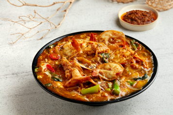

Big Prawns Hor Fun (大虾滑蛋河粉)
Iconic Authentic Photograph (Live Menu)

Status: Kept Exactly As-Is
✓ Authentic Signature Photo Locked
This iconic dish photograph will remain completely untouched and will never be regenerated, preserving the exact presentation with river prawns and signature egg gravy.
✓ Original authentic photo locked
✓ Zero modifications
✓ Preserved across homepage, menu, and modal popups